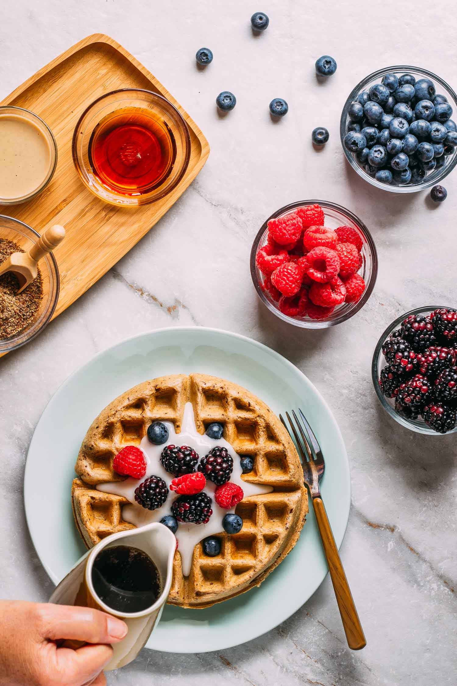

Waffles

Fluffy Waffles
Make the fluffiest waffles you have ever made with this easy to make recipe.
Add your favorite fruit toppings and a little bit (okay, maybe not so little)
whipped cream to enjoy a great breakfast.
Ingredients
- Eggs (2)
- All-purpose flour (2 cups)
- Vegetable oil (1/2 cup)
- White sugar (1 tbsp)
- Baking powder (4 tsp)
- Salt (1/4 tsp)
- Vanilla extract (1/2 tsp)
Steps
- Preheat waffle iron.
- Beat the eggs in a large bowl with a whisk until they are fluffy.
- Next, add in the flour, milk, vegetable oil, sugar, baking powder, salt and vanilla. Whisk
until contents are smooth.
- Spray the waffle iron with non-stick cooking spray. Pour the mixture onto the waffle iron.
- Cook waffles until golden brown (about four minutes).
- Serve hot and top with additional toppings if desired.